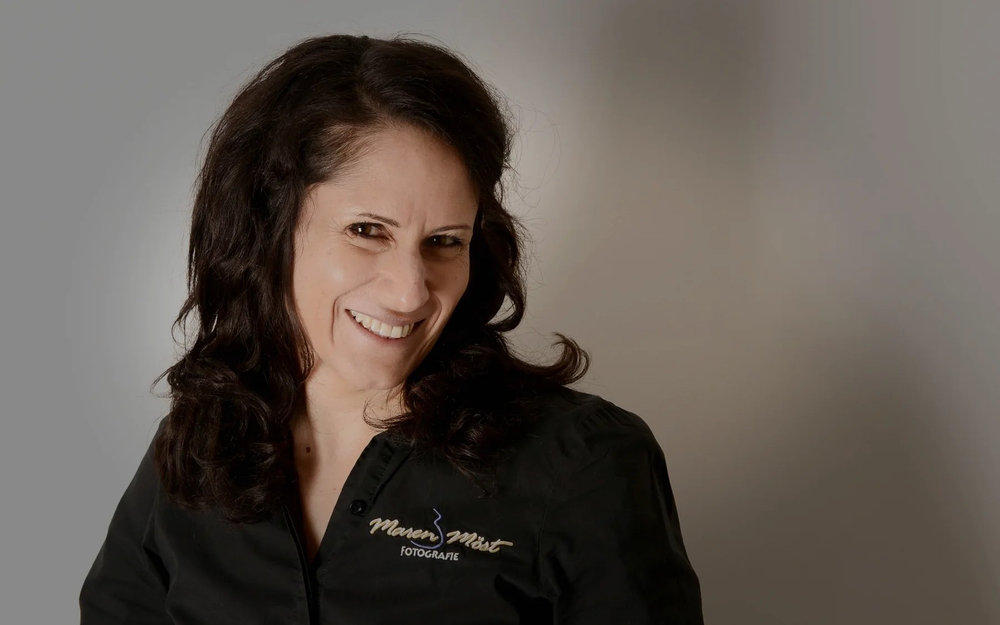

Rechtliches
Impressum
Transparente Angaben zu Studio, Kontakt und Verantwortlichkeit.

Angaben gemäß § 5 DDG
Maren Möst Fotografie
Maren Möst
Mittlere Sackgasse 15/1
71332 Waiblingen
Deutschland
Kontakt
Telefon: +49 (0) 1577 1822011
Telefon: +49 (0) 177 2028979
E-Mail: maren@moest-fotografie.de
Steuernummer
51 498 076 820
Berufsbezeichnung
Fotografin · Bachelor of Arts (Medienwirtschaft), verliehen in Deutschland.
Redaktionell verantwortlich gemäß § 18 Abs. 2 MStV
Maren Möst, Anschrift wie oben.
Verbraucherstreitbeilegung
Ich bin nicht verpflichtet und nicht bereit, an einem Streitbeilegungsverfahren vor einer Verbraucherschlichtungsstelle teilzunehmen.
Haftung für Inhalte
Als Diensteanbieterin bin ich gemäß § 7 Abs. 1 DDG für eigene Inhalte auf diesen Seiten nach den allgemeinen Gesetzen verantwortlich. Nach §§ 8 bis 10 DDG bin ich jedoch nicht verpflichtet, übermittelte oder gespeicherte fremde Informationen zu überwachen.
Haftung für Links
Mein Angebot enthält Links zu externen Websites Dritter, auf deren Inhalte ich keinen Einfluss habe. Für diese fremden Inhalte ist stets der jeweilige Anbieter verantwortlich.
Urheberrecht
Sämtliche auf dieser Website gezeigten Fotografien sind urheberrechtlich geschützt (© Maren Möst Fotografie). Jede Vervielfältigung, Bearbeitung oder Verbreitung außerhalb der Grenzen des Urheberrechts bedarf der vorherigen schriftlichen Zustimmung.